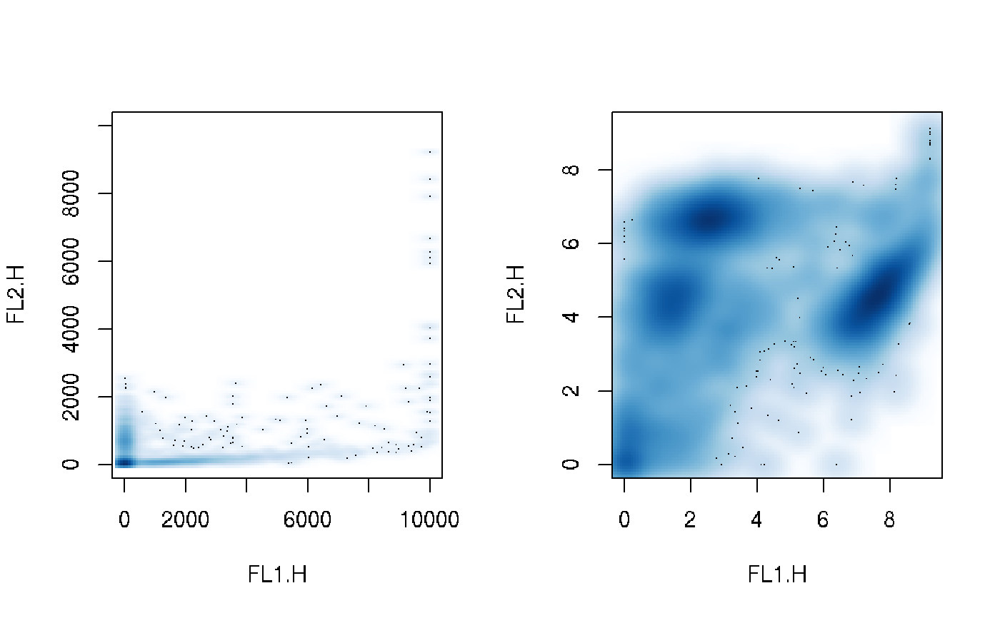

flowSet-class.RdThis class is a container for a set of flowFrame
objects
framesAn environment
containing one or more flowFrame objects.
phenoDataAn
AnnotatedDataFrame
containing the phenotypic data for the whole data set. Each row
corresponds to one of the flowFrames in the
frames slot. The sampleNames of phenoData
(see below) must match the names of the
flowFrame in the frames environment.
Objects can be created using
new('flowSet',
frames =
...., # environment with flowFrames
phenoData = .... # object of
class AnnotatedDataFrame
colnames = .... # object of class
character
)
or via the constructor flowSet, which takes arbitrary numbers of
flowFrames, either as a list or directly as arguments, along with an
optional AnnotatedDataFrame
for the phenoData slot and a character scalar for the
name by which the object can be referenced.
flowSet(..., phenoData)
Alternatively, flowSets can be coerced from list and
environment objects.
as(list("A"=frameA,"B"=frameB),"flowSet")
The safest and easiest way to create flowSets directly from
FCS files is via the read.flowSet function, and
there are alternative ways to specify the files to read. See the separate
documentation for details.
Subsetting. x[i] where i is a scalar,
returns a flowSet object, and x[[i]] a
flowFrame object. In this respect the
semantics are similar to the behavior of the subsetting operators
for lists. x[i, j] returns a flowSet for which the
parameters of each flowFrame have been subset
according to j, x[[i,j]] returns the subset of a
single flowFrame for all parameters in
j. Similar to data frames, valid values for i and
j are logicals, integers and characters. Usage: flowSet[i] flowSet[i,j] flowSet[[i]]
Subsetting by frame name. This will return a single
flowFrame object. Note that names may have to
be quoted if they are no valid R symbols
(e.g. flowSet$"sample 1"
Extract or replace the colnames
slot. Usage: colnames(flowSet) colnames(flowSet) <- value
Extract or replace the name
item from the environment. Usage: identifier(flowSet) identifier(flowSet) <- value
Extract or replace the
AnnotatedDataFrame
from the phenoData slot. Usage: phenoData(flowSet) phenoData(flowSet) <- value
Extract or replace the data frame (or columns
thereof) containing actual phenotypic information from the
phenoData slot. Usage: pData(flowSet) pData(flowSet)$someColumn <- value
Extract and set varLabels in the
AnnotatedDataFrame
of the phenoData slot. Usage: varLabels(flowSet) varLabels(flowSet) <- value
Extract and replace sample names from the
phenoData object. Sample names correspond to frame
identifiers, and replacing them will also replace the GUID
slot for each frame. Note that sampleName need to be
unique. Usage: sampleNames(flowSet) sampleNames(flowSet) <- value
Extract or replace keywords specified in a character
vector or a list from the description slot of each
frame. See keyword for details. Usage: keyword(flowSet, list(keywords)) keyword(flowSet, keywords) keyword(flowSet) <- list(foo="bar")
number of flowFrame objects in
the set. Usage: length(flowSet)
display object summary.
Return descriptive statistical summary (min, max,
mean and quantile) for each channel of each
flowFrame Usage: summary(flowSet)
Apply a function on all frames in a flowSet
object. Similar to sapply, but with additional
parameters. See separate documentation for details. Usage: fsApply(flowSet, function, ...) fsApply(flowSet, function, use.exprs=TRUE, ...)
Apply a compensation matrix on all frames in a
flowSet object. See separate documentation for details. Usage: compensate(flowSet, matrix)
Apply a transformation function on all frames of a
flowSet object. See separate documentation for details. Usage: transform(flowSet, ...)
Apply a filter object on a flowSet
object. There are methods for filters
and lists of filters. The latter has to
be a named list, where names of the list items are matching
sampleNames of the flowSet. See filter
for details. Usage: filter(flowSet, filter) filter(flowSet, list(filters))
Split all flowSet objects according to a
filter, filterResult or a list of such
objects, where the length of the list has to be the same as the
length of the flowSet. This returns a list of
flowFrames or an object of class
flowSet if the flowSet argument is set to
TRUE. Alternatively, a flowSet can be split into
separate subsets according to a factor (or any vector that can be
coerced into factors), similar to the behaviour of
split for lists. This will return a list of
flowSets. See split for details. Usage: split(flowSet, filter) split(flowSet, filterResult) split(flowSet, list(filters)) split(flowSet, factor)
Returns a flowSet of
flowFrames that have been subset according
to a filter or
filterResult, or according to a list of such
items of equal length as the flowSet. Usage: Subset(flowSet, filter) Subset(flowSet, filterResult) Subset(flowSet, list(filters))
Combine two flowSet objects, or one
flowSet and one flowFrame object. Usage: rbind2(flowSet, flowSet) rbind2(flowSet, flowFrame)
Compute spillover matrix from a compensation set. See separate documentation for details.
The bulk of the data in a flowSet object is stored in an
environment, and is therefore not
automatically copied when the flowSet object is copied. If
x is an object of class flowSet, then the code
y <- x
will create an object y that contains
copies of the phenoData and administrative data in x,
but refers to the same environment with the actual fluorescence
data. See below for how to create proper copies.
The reason for this is performance. The pass-by-value semantics of
function calls in R can result in numerous copies of the same
data object being made in the course of a series of nested function
calls. If the data object is large, this can result in considerable
cost of memory and performance. flowSet objects are intended to
contain experimental data in the order of hundreds of Megabytes, which
can effectively be treated as read-only: typical tasks are the
extraction of subsets and the calculation of summary statistics. This
is afforded by the design of the flowSet class: an object of
that class contains a phenoData slot, some administrative
information, and a reference to an environment with the
fluorescence data; when it is copied, only the reference is copied,
but not the potentially large set of fluorescence data themselves.
However, note that subsetting operations, such as y <- x[i] do
create proper copies, including a copy of the appropriate part of the
fluorescence data, as it should be expected. Thus, to make a proper
copy of a flowSet x, use y <- x[seq(along=x)]
## load example data and object creation data(GvHD) ## subsetting to flowSet set <- GvHD[1:4] GvHD[1:4,1:2]#> A flowSet with 4 experiments. #> #> An object of class 'AnnotatedDataFrame' #> rowNames: s5a01 s5a02 s5a03 s5a04 #> varLabels: Patient Visit ... name (5 total) #> varMetadata: labelDescription #> #> column names: #> FSC-H SSC-Hsel <- sampleNames(GvHD)[1:2] GvHD[sel, "FSC-H"]#> A flowSet with 2 experiments. #> #> An object of class 'AnnotatedDataFrame' #> rowNames: s5a01 s5a02 #> varLabels: Patient Visit ... name (5 total) #> varMetadata: labelDescription #> #> column names: #> FSC-H#> A flowSet with 1 experiments. #> #> An object of class 'AnnotatedDataFrame' #> rowNames: s5a01 #> varLabels: Patient Visit ... name (5 total) #> varMetadata: labelDescription #> #> column names: #> SSC-H## subsetting to flowFrame GvHD[[1]]#> flowFrame object 's5a01' #> with 3420 cells and 8 observables: #> name desc range minRange maxRange #> $P1 FSC-H FSC-Height 1024 0 1023 #> $P2 SSC-H SSC-Height 1024 0 1023 #> $P3 FL1-H CD15 FITC 1024 1 10000 #> $P4 FL2-H CD45 PE 1024 1 10000 #> $P5 FL3-H CD14 PerCP 1024 1 10000 #> $P6 FL2-A <NA> 1024 0 1023 #> $P7 FL4-H CD33 APC 1024 1 10000 #> $P8 Time Time (51.20 sec.) 1024 0 1023 #> 153 keywords are stored in the 'description' slotGvHD[[1, 1:3]]#> flowFrame object 's5a01' #> with 3420 cells and 3 observables: #> name desc range minRange maxRange #> $P1 FSC-H FSC-Height 1024 0 1023 #> $P2 SSC-H SSC-Height 1024 0 1023 #> $P3 FL1-H CD15 FITC 1024 1 10000 #> 129 keywords are stored in the 'description' slotGvHD[[1, "FSC-H"]]#> flowFrame object 's5a01' #> with 3420 cells and 1 observables: #> name desc range minRange maxRange #> $P1 FSC-H FSC-Height 1024 0 1023 #> 119 keywords are stored in the 'description' slot#> flowFrame object 's5a01' #> with 3420 cells and 1 observables: #> name desc range minRange maxRange #> $P2 SSC-H SSC-Height 1024 0 1023 #> 119 keywords are stored in the 'description' slotGvHD$s5a02#> flowFrame object 's5a02' #> with 3405 cells and 8 observables: #> name desc range minRange maxRange #> $P1 FSC-H FSC-Height 1024 0 1023 #> $P2 SSC-H SSC-Height 1024 0 1023 #> $P3 FL1-H CD15 FITC 1024 1 10000 #> $P4 FL2-H CD45 PE 1024 1 10000 #> $P5 FL3-H CD14 PerCP 1024 1 10000 #> $P6 FL2-A <NA> 1024 0 1023 #> $P7 FL4-H CD33 APC 1024 1 10000 #> $P8 Time Time (51.20 sec.) 1024 0 1023 #> 153 keywords are stored in the 'description' slot## constructor flowSet(GvHD[[1]], GvHD[[2]])#> A flowSet with 2 experiments. #> #> column names: #> FSC-H SSC-H FL1-H FL2-H FL3-H FL2-A FL4-H Timepd <- phenoData(GvHD)[1:2,] flowSet(s5a01=GvHD[[1]], s5a02=GvHD[[2]],phenoData=pd)#> A flowSet with 2 experiments. #> #> An object of class 'AnnotatedDataFrame' #> rowNames: s5a01 s5a02 #> varLabels: Patient Visit ... name (5 total) #> varMetadata: labelDescription #> #> column names: #> FSC-H SSC-H FL1-H FL2-H FL3-H FL2-A FL4-H Time#> [1] "FSC-H" "SSC-H" "FL1-H" "FL2-H" "FL3-H" "FL2-A" "FL4-H" "Time"#> [1] "anonymous"#> An object of class 'AnnotatedDataFrame' #> rowNames: s5a01 s5a02 s5a03 s5a04 #> varLabels: Patient Visit ... name (5 total) #> varMetadata: labelDescriptionpd$test <- "test" phenoData(set) <- pd pData(set)#> Patient Visit Days Grade name test #> s5a01 5 1 -6 3 s5a01 test #> s5a02 5 2 0 3 s5a02 test #> s5a03 5 3 6 3 s5a03 test #> s5a04 5 4 12 3 s5a04 testvarLabels(set)#> [1] "Patient" "Visit" "Days" "Grade" "name" "test"varLabels(set)[6] <- "Foo" varLabels(set)#> [1] "Patient" "Visit" "Days" "Grade" "name" "Foo"## sampleNames sampleNames(set)#> [1] "s5a01" "s5a02" "s5a03" "s5a04"#> [1] "A" "B" "C" "D"#> transformation #> A "applied" #> B "applied" #> C "applied" #> D "applied"#> [1] 4## compensation samp <- read.flowSet(path=system.file("extdata","compdata","data", package="flowCore")) cfile <- system.file("extdata","compdata","compmatrix", package="flowCore") comp.mat <- read.table(cfile, header=TRUE, skip=2, check.names = FALSE) comp.mat#> FL1-H FL2-H FL3-H FL4-H #> 1 1.000000 0.240000 0.03200 0.00113 #> 2 0.007770 1.000000 0.14000 0.00274 #> 3 0.008690 0.170000 1.00000 0.21000 #> 4 0.000795 0.000995 0.00323 1.00000#> FSC-H SSC-H FL1-H FL2-H FL3-H FL1-A FL4-H #> Min. 142.0000 1.0000 1.000000 1.000000 1.000000 0.0000 1.000000 #> 1st Qu. 386.0000 106.0000 3.162278 3.491152 2.838736 0.0000 4.613840 #> Median 423.0000 128.0000 4.104698 4.531584 3.651741 0.0000 7.233942 #> Mean 424.4648 137.7706 4.619515 5.094297 4.180982 0.0105 8.394232 #> 3rd Qu. 462.0000 156.0000 5.376117 5.882084 4.740032 0.0000 10.181517 #> Max. 750.0000 1023.0000 78.438856 98.217189 125.214969 12.0000 598.885433#> FSC-H SSC-H FL1-H FL2-H FL3-H FL1-A #> Min. 142.0000 1.0000 0.9748705 0.3112685 0.4886177 0.0000 #> 1st Qu. 386.0000 106.0000 3.1216476 2.2556718 2.3423500 0.0000 #> Median 423.0000 128.0000 4.0434443 3.0135541 3.0634311 0.0000 #> Mean 424.4648 137.7706 4.5563619 3.3921168 3.5356139 0.0105 #> 3rd Qu. 462.0000 156.0000 5.3077275 3.9840465 4.0298755 0.0000 #> Max. 750.0000 1023.0000 77.1379821 65.3909703 115.4837100 12.0000 #> FL4-H #> Min. 0.07356198 #> 1st Qu. 4.00850577 #> Median 6.54383649 #> Mean 7.63730991 #> 3rd Qu. 9.40467405 #> Max. 598.32964722## transformation opar <- par(mfcol=c(1:2)) plot(set[[1]], c("FL1.H", "FL2.H")) set <- transform(set, transformList(c("FL1.H", "FL2.H"), log)) plot(set[[1]], c("FL1.H", "FL2.H"))par(opar) ## filtering of flowSets rectGate <- rectangleGate(filterId="nonDebris", FSC.H=c(200,Inf)) fres <- filter(set, rectGate) class(fres)#> [1] "filterResultList" #> attr(,"package") #> [1] "flowCore"#> nonDebris+: 1695 of 3420 events (49.56%)rectGate2 <- rectangleGate(filterId="nonDebris2", SSC.H=c(300,Inf)) fres2 <- filter(set, list(A=rectGate, B=rectGate2, C=rectGate, D=rectGate2)) ## Splitting frames of a flowSet split(set, rectGate)#> $`nonDebris+` #> A flowSet with 4 experiments. #> #> An object of class 'AnnotatedDataFrame' #> rowNames: A B C D #> varLabels: Patient Visit ... population (7 total) #> varMetadata: labelDescription #> #> column names: #> FSC.H SSC.H FL1.H FL2.H FL3.H FL2.A FL4.H Time #> #> $`nonDebris-` #> A flowSet with 4 experiments. #> #> An object of class 'AnnotatedDataFrame' #> rowNames: A B C D #> varLabels: Patient Visit ... population (7 total) #> varMetadata: labelDescription #> #> column names: #> FSC.H SSC.H FL1.H FL2.H FL3.H FL2.A FL4.H Time #>#> $`nonDebris+` #> A flowSet with 2 experiments. #> #> An object of class 'AnnotatedDataFrame' #> rowNames: A B #> varLabels: Patient Visit ... population (7 total) #> varMetadata: labelDescription #> #> column names: #> FSC.H SSC.H FL1.H FL2.H FL3.H FL2.A FL4.H Time #> #> $`nonDebris-` #> A flowSet with 2 experiments. #> #> An object of class 'AnnotatedDataFrame' #> rowNames: A B #> varLabels: Patient Visit ... population (7 total) #> varMetadata: labelDescription #> #> column names: #> FSC.H SSC.H FL1.H FL2.H FL3.H FL2.A FL4.H Time #>#> $`1` #> A flowSet with 2 experiments. #> #> An object of class 'AnnotatedDataFrame' #> rowNames: A B #> varLabels: Patient Visit ... split (7 total) #> varMetadata: labelDescription #> #> column names: #> FSC.H SSC.H FL1.H FL2.H FL3.H FL2.A FL4.H Time #> #> $`2` #> A flowSet with 2 experiments. #> #> An object of class 'AnnotatedDataFrame' #> rowNames: C D #> varLabels: Patient Visit ... split (7 total) #> varMetadata: labelDescription #> #> column names: #> FSC.H SSC.H FL1.H FL2.H FL3.H FL2.A FL4.H Time #>#> A flowSet with 4 experiments. #> #> An object of class 'AnnotatedDataFrame' #> rowNames: A B C D #> varLabels: Patient Visit ... Foo (6 total) #> varMetadata: labelDescription #> #> column names: #> FSC.H SSC.H FL1.H FL2.H FL3.H FL2.A FL4.H Time#> A flowSet with 4 experiments. #> #> An object of class 'AnnotatedDataFrame' #> rowNames: A B C D #> varLabels: Patient Visit ... Foo (6 total) #> varMetadata: labelDescription #> #> column names: #> FSC.H SSC.H FL1.H FL2.H FL3.H FL2.A FL4.H Time#> A flowSet with 4 experiments. #> #> An object of class 'AnnotatedDataFrame' #> rowNames: A B C D #> varLabels: Patient Visit ... Foo (6 total) #> varMetadata: labelDescription #> #> column names: #> FSC.H SSC.H FL1.H FL2.H FL3.H FL2.A FL4.H Time## combining flowSets rbind2(set[1:2], set[3:4])#> A flowSet with 4 experiments. #> #> An object of class 'AnnotatedDataFrame' #> rowNames: A B C D #> varLabels: Patient Visit ... Foo (6 total) #> varMetadata: labelDescription #> #> column names: #> FSC.H SSC.H FL1.H FL2.H FL3.H FL2.A FL4.H Timerbind2(set[1:3], set[[4]])#> A flowSet with 4 experiments. #> #> An object of class 'AnnotatedDataFrame' #> rowNames: A B C anonymous frame #> varLabels: Patient Visit ... Foo (6 total) #> varMetadata: labelDescription #> #> column names: #> FSC.H SSC.H FL1.H FL2.H FL3.H FL2.A FL4.H Timerbind2(set[[4]], set[1:2])#> A flowSet with 3 experiments. #> #> An object of class 'AnnotatedDataFrame' #> rowNames: A B anonymous frame #> varLabels: Patient Visit ... Foo (6 total) #> varMetadata: labelDescription #> #> column names: #> FSC.H SSC.H FL1.H FL2.H FL3.H FL2.A FL4.H Time